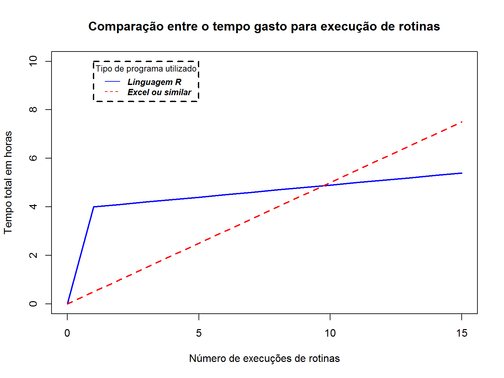

Aula 1
Introdução ao R
Lucas Fernandes de Magalhães
Apresentação do Curso
Orientações iniciais
Motivação
Desenvolvimento do Curso
Fundamentos - manipulação de dados - visualização de dados - Projeto
Por que usar a linguagem R?
O que é o R?
O R é uma linguagem de programação voltada, sobretudo, para a estatística e produção de gráficos. No nosso caso, utilizaremos essa linguagem para a automatização de rotinas.
\(~\)
E o que é uma linguagem de programação? De maneira superficial, é um conjunto de regras semânticas e sintáticas (uma linguagem, portanto) que nos permite passar instruções para um computador.
Vantagens de se utilizar o R
Software livre e de código aberto \(~\)
Compatibilidade com diversos sistemas operacionais \(~\)
Suporta extensões (pacotes) \(~\)
Reprodutibilidade \(~\)
Comunidade engajada
R vs. Excel


Onde pesquisar?
Caso surja alguma dúvida, seguem abaixo algumas fontes de consulta:
RStudio
O que é o RStudio
R

RStudio

Conhecendo o RStudio

Conhecendo o RStudio

Conhecendo o RStudio

Primeiros passos no R
Como nos imaginamos ao programar
Executando códigos
Para executar códigos no RStudio, basta digitá-los na janela “Editor” e apertar o botão Run ou utilizar o atalho “Ctrl + enter”.
Para executar apenas uma parte específica do código ou mais de uma linha, basta selecionar e depois rodar o código.

Comentando os códigos
É uma boa prática comentar os códigos criados, sobretudo, as linhas que envolvem operações mais complexas.
Para realizar isso, basta incluir um “#” antes do comentário.

Operações Matemáticas
O R pode ser utilizado como uma calculadora
1+1 #Soma## [1] 24-2 #Subtração## [1] 2(3*(2+3))/5 #Multiplicação e divisão## [1] 3Funções
O R traz consigo uma série de funções que automatizam a execução de algumas rotinas.
Se houver dúvidas a respeito da função, basta digitar help(nome_da_função) ou ?nome_da_função
A função no R é sempre um nome acompanhado de parênteses. Dentro dos parênteses são inseridos os argumentos da função
round(x=45.222, digits=2)## [1] 45.22seq(from=0, to=20, by=2)## [1] 0 2 4 6 8 10 12 14 16 18 20Funções
Para simplificar a escrita da função, é possível “passar” direto os valores dos argumentos para a função sem especificá-los, caso eles estejam na ordem correta.
round(45.222, 2)## [1] 45.22seq(0, 20, 2)## [1] 0 2 4 6 8 10 12 14 16 18 20Criação de objetos
Para criar objetos no R, devemos utilizar o sinal de atribuição <-. Para facilitar a digitação desse sinal, podemos usar o atalho “Alt-”.
x <- 1
curso <- "EJEF"
x #Executando os objetos## [1] 1curso## [1] "EJEF"Criação de objetos
Para a criação dos nomes dos objetos, devemos observar algumas regras:
Espaçar os nomes utilizando: . (ponto), _ (underline), ou caixa alta:
- arq.cent
- arq_cent
- arqCent
\(~\) Evitar acentos ou caracteres especiais:
- cincão
- cai/xa
- açaí
\(~\) Proibido usar nomes reservados: TRUE, FALSE, T, F, etc. (Para checar os nomes reservados, usar ?reserved)
Criação de objetos
Da mesma forma que o R nos permite conduzir operações matemáticas, também é possível realizar operações utilizando os próprios objetos já criados
x <- 5
y <- 10.2
z <- x+y
x*y## [1] 51y/x## [1] 2.04Criação de objetos
Quando os objetos são criados, eles aparecem no “Global Environment” ou ambiente

Removendo objetos
É possível visualizar os objetos que estão carregados no ambiente com a função ls() e removê-los usando rm()
ls()## [1] "curso" "Horas" "Rotina" "x" "y" "z"rm(x)
ls() #Aparecerão todos os objetos menos x## [1] "curso" "Horas" "Rotina" "y" "z"rm(list=ls()) #Para remover todos os objetos
ls()## character(0)Estruturas dos objetos
| Estrutura | Definição |
|---|---|
| Escalar | Basicamente, é um vetor atômico com um único elemento |
| Vetor atômico | É a estrutura mais básica do R. Consiste em uma sequência de elementos de mesmo tipo unidos pela função concatenate c() |
| Data frames | É a estrutura mais utilizada para se armazenar dados no R. Possui duas dimensões: linhas e colunas. Em outras palavras, é a boa e velha planilha do excel |
Estruturas dos objetos
Vetores Atômicos
- Os vetores consistem em uma sequência de elementos que são agrupados pela função concatenate c().
x <- c(1,2,4,6,50,3,4,23,12)
x ## [1] 1 2 4 6 50 3 4 23 12y <- c("Ejef", "TJMG", "GEARQ", "DIRGED")
y## [1] "Ejef" "TJMG" "GEARQ" "DIRGED"Tipos de vetores
Os vetores podem ser de tipos (ou classes) diferentes:
Numeric: 2;3.56;7.10;20
Integer: 1;2;3;4;5;6
Character: “TJMG”, “DIRGED”
Logical: TRUE ou FALSE
Para conferir o tipo de um vetor, basta usar a função class()
x <- c("Casa", "Curso")
class(x)## [1] "character"Tipo de vetores
Os vetores não podem possuir mais de um tipo. Dessa maneira, se for criado um vetor com mais de um tipo, ele se converterá automaticamente ao tipo mais genérico:
- Character > numeric > integer > logical
x <- c(1,4, TRUE,TRUE,FALSE)
x## [1] 1 4 1 1 0y <- c("EJEF", 1, 4, 5)
y## [1] "EJEF" "1" "4" "5"Tipo de vetores
Além dessa conversão automática, é possível forçar os vetores a assumirem um determinado tipo usando as funções as.()
x <- c(TRUE,TRUE,FALSE)
as.numeric(x)## [1] 1 1 0y <- c(1,4,5,7,7,8)
as.character(y)## [1] "1" "4" "5" "7" "7" "8"z <- c("EJEF", "TJMG", "DIRGED")
as.numeric(z)## Warning: NAs introduzidos por coerção## [1] NA NA NACriando vetores com funções
Ao invés de digitar um número de cada vez, existem algumas funções que facilitam a criação de vetores numéricos
x <- c(1,2,3,4,5,6,7,8,9,10,11,12,13,14,15,16,17,18,19,20)
x <- 1:20
x <- seq(from=1, to=20)
y <- c("EJEF", "DIRGED", "EJEF", "DIRGED", "EJEF",
"DIRGED", "EJEF", "DIRGED", "EJEF", "DIRGED")
y <- rep(c("EJEF", "DIRGED"), times=5)Operações com vetores
Assim como realizamos contas matemáticas com grandezas escalares, também é possível fazer o mesmo com vetores:
x <- seq(from=4,to=50,by=1.4)
x*2## [1] 8.0 10.8 13.6 16.4 19.2 22.0 24.8 27.6 30.4 33.2 36.0 38.8 41.6 44.4
## [15] 47.2 50.0 52.8 55.6 58.4 61.2 64.0 66.8 69.6 72.4 75.2 78.0 80.8 83.6
## [29] 86.4 89.2 92.0 94.8 97.6sum(x)## [1] 871.2mean(x)## [1] 26.4Operações com vetores
A maior parte das funções do R são “vetorizadas”, isto é, elas se aplicam a vetores:
x <- c("TJMG - EJEF", "TJMG - DIRDEP", "TJSP - COARQ")
str_split("TJMG - coarq", pattern = " - ", simplify = T)## [,1] [,2]
## [1,] "TJMG" "coarq"str_split(x,pattern = " - ", simplify = T )## [,1] [,2]
## [1,] "TJMG" "EJEF"
## [2,] "TJMG" "DIRDEP"
## [3,] "TJSP" "COARQ"Manipulando vetores
Para se identificar um elemento dentro do vetor, deve-se usar colchetes e incluir dentro deles a posição desejada
x <- c("EJEF", "DIRDEP", "COARQ", "COVAD")
x[2]## [1] "DIRDEP"x[2:4]## [1] "DIRDEP" "COARQ" "COVAD"x[c(1,3)]## [1] "EJEF" "COARQ"x[c(TRUE,FALSE,TRUE, FALSE)] #Vetor Booleano## [1] "EJEF" "COARQ"Manipulando vetores
Podemos também excluir elementos de um vetor, incluindo um sinal negativo antes da posição dentro dos colchetes:
x <- c("EJEF", "DIRDEP", "COARQ", "COVAD")
x[-2]## [1] "EJEF" "COARQ" "COVAD"x[-(2:4)]## [1] "EJEF"x[-c(1,3)]## [1] "DIRDEP" "COVAD"Manipulando vetores
Para unir dois vetores ou acrescentar novas informações, basta usar novamente a função c()
x <- c(1,2,3,4,5)
y <- c(6,7,8,9,10)
z <- c(x,y)
z## [1] 1 2 3 4 5 6 7 8 9 10k <- c(x,y,11,12,13,14,15)
k## [1] 1 2 3 4 5 6 7 8 9 10 11 12 13 14 15Data Frames (ou tabelas)
Os Data Frames são tabelas que contém linhas e colunas. Para criá-las, devemos usar a função data.frame
x <- data.frame(Servidor=c("Lucas", "Daniela", "Maricélia",
"Lorrany", "Bruno", "Vantuir",
"Fernando", "André"),
Setor=c("Covad", "Gearq", "Covad", "Gearq",
"Gearq", "Covad", "Dirged", "Dirged"),
Dia_aniversario=c(28,15,13,22,27,12,31,2),
stringsAsFactors = F)Visualizando Data frames
É possível visualizar o Data Frame criado de diversas formas:
Head(x,n=2)
Tail(x, n=3)
View(x)
str(x)
ncol(x)
nrow(x)
Manipulando Data Frames
Similar aos vetores, para identificar elementos dentro de um Data Frame, devemos utilizar colchetes .
No entanto, no caso dos Data Frames, os colchetes devem ser supridos com duas informações, uma para a linha e a outra para a coluna.
A informação da linha deve vir antes da vírgula e a da coluna após.

Manipulando Data Frames
x[4,3] #Dia de aniversário da Lorrany## [1] 22x[6,2] #Setor do Vantuir## [1] "Covad"x[1:4,1] #Selecionando múltiplas linhas## [1] "Lucas" "Daniela" "Maricélia" "Lorrany"Manipulando Data Frames
x[c(1,3),2:3] #Selecionando múltiplas linhas e colunas## Setor Dia_aniversario
## 1 Covad 28
## 3 Covad 13x[,2] #Selecionando uma coluna inteira## [1] "Covad" "Gearq" "Covad" "Gearq" "Gearq" "Covad" "Dirged" "Dirged"x[1,] #Selecionando uma linha inteira## Servidor Setor Dia_aniversario
## 1 Lucas Covad 28Manipulando Data Frames
Para eliminar linhas ou colunas, o procedimento é idêntico ao dos vetores. Basta incluir um sinal negativo na frente da posição.
x[-(1:6),]## Servidor Setor Dia_aniversario
## 7 Fernando Dirged 31
## 8 André Dirged 2x[1:2, -3]## Servidor Setor
## 1 Lucas Covad
## 2 Daniela GearqManipulando Data Frames
As colunas do Data Frame podem ser selecionadas a partir do símbolo $
x$Servidor## [1] "Lucas" "Daniela" "Maricélia" "Lorrany" "Bruno" "Vantuir"
## [7] "Fernando" "André"x$Setor[4]## [1] "Gearq"Manipulando Data Frames
É possível também “filtrar” o Data Frame a partir dos conteúdos da própria tabela
x[x$Setor=="Covad",]## Servidor Setor Dia_aniversario
## 1 Lucas Covad 28
## 3 Maricélia Covad 13
## 6 Vantuir Covad 12Entendendo o filtro:
x$Setor=="Covad"## [1] TRUE FALSE TRUE FALSE FALSE TRUE FALSE FALSEUnindo Data Frames
É possível unir novas linhas e colunas ao Data Frame utilizando as funções Rbind e Cbind:
cargo <- c("Técnico Judiciário", "Oficial Judiciário", "Técnico Judiciário",
"Oficial Judiciário", "Técnico Judiciário", "Oficial Judiciário",
"Técnico Judiciário", "Oficial Judiciário")
x <- cbind(x, cargo) #Sobrescrevendo X, colocando a coluna cargo à esquerda das já existentes
#str(x)
y <- c("Simone", "Gedoc", "15", "Oficial Judiciário")
x <- rbind(x, y) #Sobrescrevendo x, colocando a linha y abaixo das já existentes
#View(x)Lidando com erros
Errar é natural e perfeitamente compreensível, não se desespere…

Dois tipos de avisos
Existem dois tipos de avisos no R: WARNING e ERROR.
Quando aparece uma mensagem de Warning, isso significa que o código foi executado, mas que, provavelmente, o resultado não é aquilo que se deseja
Quando aparece uma mensagem de Error, o código não chega a ser executado
Dois tipos de avisos
a <- c(1,4,6)
b <- c("cavalo", "cachorro", "gato")
mean(a)## [1] 3.666667mean(b)## Warning in mean.default(b): argument is not numeric or logical: returning
## NA## [1] NAmean(d)## Error in mean(d): objeto 'd' não encontradoEntendendo os avisos